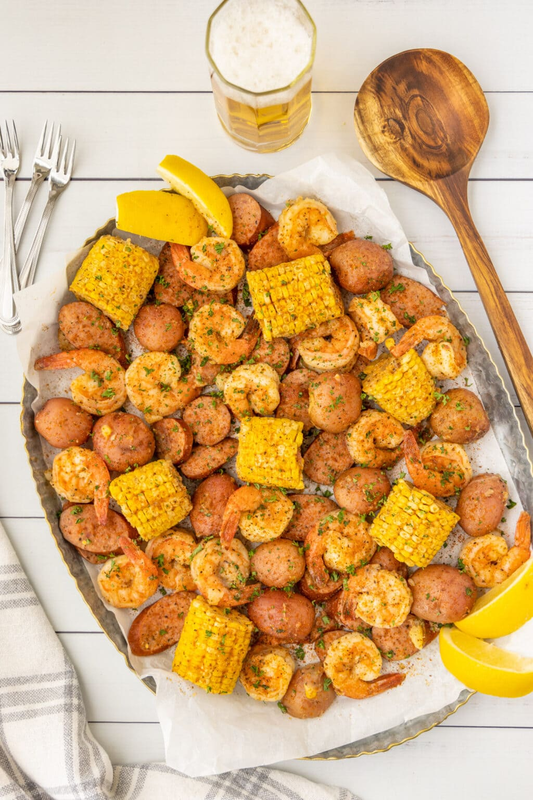

Home
Shrimp Boil Recipe

Description
This classic shrimp boil is a hearty, flavorful, one-pot seafood feast filled with tender potatoes, sweet corn, zesty sausage, and juicy shrimp all infused with Old Bay seasoning. It’s a crowd-pleaser for any occasion, especially summer cookouts and family gatherings.
Easy to make and even easier to enjoy, this dish is perfect when served with melted butter, fresh parsley, and lemon wedges for that extra zing.
Steps
- Fill stock pot or Dutch oven halfway with water. Cover with lid and bring to a boil over medium-high heat.
- Remove lid and add red onion, garlic cloves, Old Bay seasoning, garlic salt, black pepper, and potatoes.
- Replace lid and boil for about 20 minutes to cook the potatoes. HINT: Use a lid with a vent hole or prop the lid open a little to allow excess steam to escape.
- Remove lid and use a spoon to scrape any seasoning off the sides of the pan. Add corn. Replace lid, bring back to a boil, and cook 10 minutes more.
- Remove lid and stir, loosening seasonings from the side of the pan. Add the sausage and 4 of the lemon wedges to the pan. Replace lid, bring back to a boil, and cook 10 minutes more.
- Remove lid and slowly add shrimp so as not to splash any hot liquid out of the pan. The pot will be full. If you have room, try to stir the shrimp into the pot so they aren’t just sitting on top. Replace lid, bring back to a boil, then turn off the heat. Allow shrimp to cook without the fire on and the lid in place for about 5 minutes.
- Place a colander over a large bowl and carefully drain the pan. You can reserve the broth for a fish chowder or other seafood soup or stew.
- Remove cooked lemon wedges and discard. Toss hot shrimp boil with butter to coat. Sprinkle with additional Old Bay seasoning if desired. Garnish with chopped fresh parsley. Serve with fresh lemon wedges.
Enjoy!